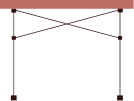

找裝備
如何準備露營裝備
決定好露營地點後, 可以怎麼準備裝備呢？以下介紹幾個必備裝備､ 挑選原則, 幫助身為露營新手的你簡單､ 輕鬆地, 開啟這段有趣的旅程。

找裝備
決定好露營地點後, 可以怎麼準備裝備呢？以下介紹幾個必備裝備､ 挑選原則, 幫助身為露營新手的你簡單､ 輕鬆地, 開啟這段有趣的旅程。
帳篷
在所有裝備中, 帳篷是最重要也最昂貴的一項。它是我們在野外遮風避雨的地方, 能不能安穩睡上一晚, 全都靠它。

可從「可容納人數」著手, 並建議多加上 2 位作為參考, 如此一來, 帳內空間較為舒適, 也有地方放置行李。

夏天露營時, 可準備天幕, 既可遮陽又能延伸帳篷空間。

如果選在冬天露營, 可以準備客廳帳, 達到保暖､ 防風雨的效果。
寢具
山上與平地不同, 白天就算再溫暖, 經常是太陽一下山, 氣溫便明顯降溫, 因此睡袋絕對是不可或缺的必需品。

建議挑選比戶外溫度再低 3 至 5 度的睡袋。假設營地入夜後, 戶外溫度只剩 5 度, 則應挑選最適溫度 0 度的睡袋。

市面上常見的睡墊有泡棉及充氣兩種, 前者優點是輕, 後者則是收納方便, 睡眠舒適程度普遍也優於泡棉。

有充氣型､ 棉布型､ 記憶乳膠型枕頭等類型, 可視個人情況選擇。
炊具
野外炊煮的重點, 不外乎食材準備和炊煮器具兩部分。在炊具準備上, 基本上包括一個湯鍋和一個平底鍋。

在營地可用來製作銅盤烤肉或煮火鍋。另外, 建議使用防風片幫助卡式爐擋風, 食材會比較快熟透。

可利用鑄鐵鍋, 進行蒸､ 煮､ 炸､ 燻､ 烘培等各種料理方式, 相當萬用便利。
裝備不齊全､ 經費有限怎麼辦？以下介紹幾個網站, 讓你快速取得上述裝備！

全台最大運動用品店, 有齊全的運動用品, 且價格實惠。

精選世界各地優質商品, 從親山郊遊､ 到風格露營等戶外裝備一應俱全。

專營戶外用品的銷售, 也提供裝備租借的服務。